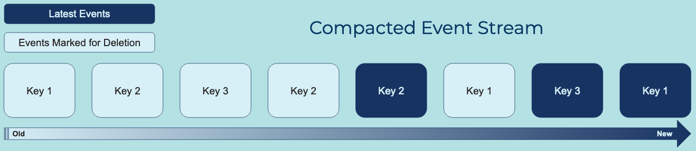

Compacted Event Stream
Event Streams often represent keyed snapshots of state, similar to a table in a relational database. That is, the Events contain a primary key (identifier) and data that represents the latest information of the business entity related to the Event, such as the latest balance per customer account. Event Processing Applications will need to process these Events to determine the current state of the business entity. However, processing the entire Event Stream history is often not practical.
Problem
How can a (keyed) table be stored in an Event Stream forever, using the minimum amount of space?
Solution

Remove events from the Event Stream that represent outdated information and have been superseded by new Events. The table's current data (i.e., its latest state) is represented by the remaining Events in the stream.
This approach bounds the storage space of the table's Event Stream to Θ(number of unique keys currently in table), rather than Θ(total number of change events for table). In practice, the number of unique keys (e.g., unique customer IDs) is typically much smaller than the number of table changes (e.g., total number of changes across all customer profiles). A Compacted Event Stream thus reduces the storage space significantly in most cases.
Implementation
Apache Kafka® provides this functionality natively through its Topic Compaction feature. An Event Stream (topic in Kafka) is scanned periodically to remove any old Events that have been superseded by newer Events that have the same key, such as as the same customer ID. Note that compaction is an asynchronous process in Kafka, so a compacted stream may contain some superseded events, which are waiting to be compacted away.
To create a compacted Event Stream called customer-profiles with Kafka:
➜ kafka-topics --create \
--bootstrap-server <bootstrap-url> \
--replication-factor 3 \
--partitions 3 \
--topic customer-profiles \
--config cleanup.policy=compact
Created topic customer-profiles.
The kafka-topics command can also verify the current topic's configuration:
➜ kafka-topics --bootstrap-server localhost:9092 --topic customer-profiles --describe
Topic: customer-profiles PartitionCount: 3 ReplicationFactor: 1 Configs: cleanup.policy=compact,segment.bytes=1073741824
Topic: customer-profiles Partition: 0 Leader: 0 Replicas: 0 Isr: 0 Offline:
Topic: customer-profiles Partition: 1 Leader: 0 Replicas: 0 Isr: 0 Offline:
Topic: customer-profiles Partition: 2 Leader: 0 Replicas: 0 Isr: 0 Offline:
Considerations
Compacted Event Streams allow for some optimizations:
- First, they allow the Event Streaming Platform to limit the storage growth of the Event Stream in a data-specific way, rather than removing Events universally after a pre-configured period of time.
- Second, having smaller Event Streams allows for faster recovery and system migration strategies.
It is important to understand that compaction, on purpose, removes historical data from an Event Stream by removing superseded Events as defined above. In many use cases, however, historical data should not be removed, such as for a stream of financial transactions, where every single transaction needs to be recorded and stored. Here, if the storage of the Event Stream is the primary concern, use an Infinite Retention Event Stream instead of a compacted stream.
References
- Compacted Event Streams are highly related to the State Table pattern.
- Compacted Event Streams work a bit like simple Log Structured Merge Trees.
- Cleanup policy configuration of Kafka topics.